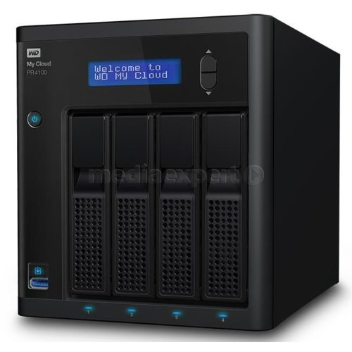
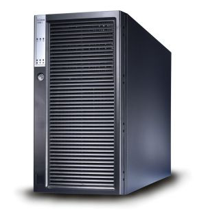
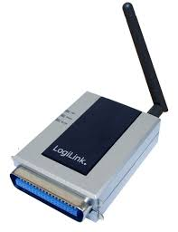
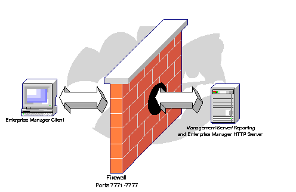
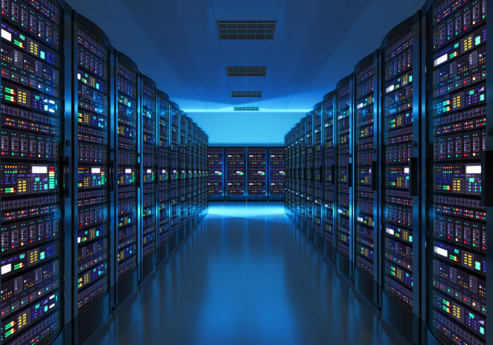

Serwery
Serwery
Serwer plików to najprostsza i najczęściej wykorzystywana rola serwera. Serwer plików, jak sama nazwa sugeruje, to miejsce, gdzie przechowywane są pliki, do których ma mieć dostęp więcej niż jedna osoba, w szczególności wszyscy pracownicy firmy. Przykładami udostępnianych zasobów są pliki, bazy danych, łącza internetowe, a także urządzeń peryferyjnych jak drukarki i skanery.
Dostęp do plików powinien być różnicowany poprzez nadawanie użytkownikom uprawnień do poszczególnych folderów i plików. Oczywiście możliwy jest przypadek, często spotykany w najmniejszych firmach, gdy wszyscy mają nieograniczony dostęp do wszystkiego.Serwerem nazywa się często również komputer świadczący takie usługi, zazwyczaj udostępnianie pewnych zasobów innym komputerom lub przekaz danych.
Zależnie od potrzeb i zastosowanych w związku z tym rozwiązań pliki mogą być dostępne tylko w sieci lokalnej albo również poza – w Internecie lub intranecie.
Format i zawartość i plików jest dowolny. Mogą to być np. dokumenty MS-Word, arkusze MS-Excel, pliki graficzne, zdjęcia, filmy.
Komputer pełniący rolę serwera plików powinien mieć dużo miejsca na dyskach a dyski powinny być szybkie.
Warto zainwestować w zabezpieczenia na wypadek awarii dysków oraz rozwiązanie do archiwizacji i tworzenia kopii zapasowych.
Dla zapewnienia szybkiego przesyłania plików istotna jest przepustowość połączenia sieciowego, przez które wszystkie pliki muszą być przesłane. Chodzi o to, aby łącze pomiędzy serwerem a switchem nie było wąskim gardłem – powinno mieć przepustowość kilka razy większą od przepustowości łącza pomiędzy komputerami - stacjami roboczymi a switchem.
W przypadku serwera plików na plan dalszy schodzi wydajność procesora czy ilość pamięci.
Najprostsza i najczęściej wykorzystywana funkcja to serwer plików, czyli miejsce, gdzie przechowywane są pliki, do których ma mieć dostęp więcej niż jedna osoba, w szczególności wszyscy pracownicy.

Zadaniem serwera bazodanowego jest utrzymywanie bazy danych. Po bazy danych sięgamy, gdy informacji jest tak dużo, że trudno byłoby zapisać je w plikach. Baza danych w dużym uproszczeniu też jest plikiem – jednym wielkim plikiem, w którym informacje są zapisane w uporządkowany sposób, w postaci powiązanych ze sobą tabel i rekordów.

Serwer terminalowy pozwala na uruchamianie programów na odległość – będąc w domu czy w podróży możesz pracować tak, jakbyś siedział przy biurku w pracy.
Serwer pocztowy jest odpowiedzialny za odbieranie i wysyłanie poczty elektronicznej.
Serwer wydruku pozwala wielu użytkownikom na korzystanie z jednej drukarki.

Firewall/IDS/IPS jest odpowiedzialny za bezpieczeństwo styku firmowej sieci z Internetem – zabezpieczenie przed nieautoryzowanym dostępem.

Serwer www/ftp służy do publikowania stron internetowych oraz wymianę plików przez Internet.
Zadaniem serwera usług katalogowych (active directory) jest zarządzanie uprawnieniami użytkowników

Serwerem może być zwykły komputer, jednak w celu pełnego wykorzystania możliwości, jakie daje oprogramowanie serwerowe, powinna to być maszyna przeznaczona do tej roli. Maszyny takie są przystosowane do pracy ciągłej, wyposaża się je w duże i szybkie dyski twarde lub SSD, głównie SAS (dawniej SCSI), dużą ilość pamięci RAM najczęściej z funkcją ECC oraz wydajne wielordzeniowe procesory serwerowe. Najczęściej serwerowe płyty główne mogą obsłużyć 2, 4 lub więcej procesorów.
Serwer musi być maszyną niezawodną, w tym celu często posiada 2 lub więcej wbudowanych zasilaczy typu hot-plug i awaryjne zasilanie, a pomieszczenie, w którym stoi powinno posiadać odpowiednią wentylację lub klimatyzację. Dodatkowo niezawodność podnosi zastosowanie układu kontroli poprawnej pracy, tzw. watchdog, którego zadaniem jest przeprowadzenie restartu serwera w razie zawieszenia się systemu operacyjnego.